Redesigning a high-frequency point-of-sale app to make every transaction faster and more intuitive for store staff — on any device, under real-world pressure.
My Role
Lead UX/UI Designer
Company
Focalpay AB · 2024–2025
Platform
iOS · Android · Browser
Methods
Research · Usability Testing
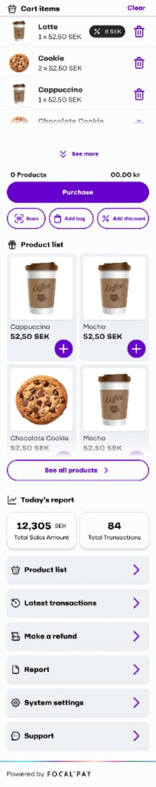
Cashier POS — interaction preview
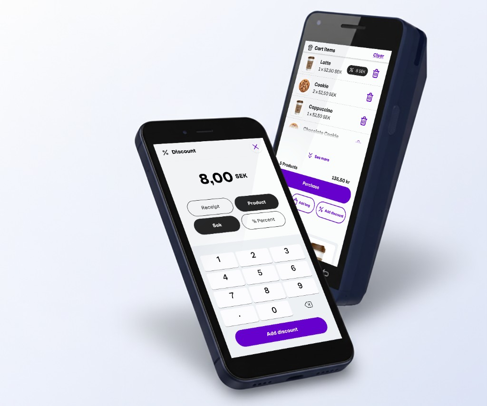
Introduction
Speed is the Product
Traditional POS terminals are heavy, expensive, and inflexible. The Focalpay cashier application was built to change that — a lightweight, device-agnostic system that runs on any smartphone, tablet, or touchscreen terminal, with no bulky hardware required.
The core idea: give small and medium-sized stores a complete point-of-sale solution that is faster, greener, and easier than legacy infrastructure — with everything from product management to daily reports built into a single scrollable interface.
My Responsibilities
Lead UX/UI Designer — end to end, from research to final screens
Stakeholder interviews and workshops with store owners
Moderated usability testing sessions in real store environments
Designing the scrollable home screen architecture and all core flows
Introducing the "Add Product" feature — allowing product management without a back-office
WCAG accessibility compliance across all screens
Interaction design for barcode scanning, discounts, refunds, and reporting
Discover
Every Second Counts
Cashiers work fast. Every extra tap, every screen transition, every moment of confusion costs real time — and frustrated customers. The core design challenge was presenting a large amount of functionality on a small screen without slowing down the transaction flow.
01
Too Many Screens
Legacy POS systems required navigating multiple pages to complete a single transaction, breaking the cashier's flow.
02
No Product Management
Stores had to rely on a separate back-office system to add or edit products — a slow, disconnected workflow.
03
Heavy Infrastructure
Traditional terminals were expensive and energy-intensive. Stores wanted a leaner, mobile-first alternative.
"We want something that just works — fast. Our staff shouldn't need training to use a cashier app."
— Store Owner, Usability Research Session
Affinity mapping · Card sorting
⚡
Speed & Flow
Every extra tap costs real time when a customer is waiting
Cashiers rarely look at the screen — they rely on muscle memory
Legacy POS needed 4+ taps just to complete one purchase
The cart must always be visible — never hidden behind navigation
Quick actions (scan, bag, discount) must be one gesture away
"We want something that just works — fast. Staff shouldn't need training."
→
Single scrollable home screen eliminates all secondary navigation for core flows
📦
Product Management
Stores needed a separate back-office just to add products — a real blocker
Unknown barcodes created dead-ends at the till — no recovery path
Staff wanted to create new products directly from the POS camera
Search by EAN or name needed — not all items have scannable codes
"We shouldn't need two systems. Everything should be in one place."
→
In-app product creation from unknown scan removes back-office dependency entirely
%
Discounts & Refunds
Discounts must apply to a single product OR the whole receipt
SEK vs % toggle needed — different promo types for different stores
Refundable vs non-refundable distinction causes major cashier confusion
Large keypad keys are critical — cashiers sometimes wear gloves
"Make it simple — 2 choices max. I don't have time to read options."
→
2 scope × 2 type toggle — maximum flexibility with minimum decisions
📊
Reports & End-of-Day
Store owners need daily totals without switching to another app
Report gaps occur when empty days go unsubmitted — a compliance risk
Register vs control-check view is mandatory for end-of-day audits
Transaction history must be searchable and filterable by payment method
"Done in 2 minutes. No spreadsheet, no second app — finally."
→
"Coming up" feature prevents gaps; integrated reporting removes the #1 reason to switch tools
Research
Watching Cashiers Work
I combined qualitative and observational research methods, including testing the application in an actual live store environment — one of the most valuable inputs in the entire process.
🏪
Real-world store testing revealed that cashiers rarely look at the screen during a transaction — they rely on muscle memory and peripheral vision.
In-store observation · Live cashier sessions
🗣️
"We need the cart front and centre, always. Everything else is secondary."
Store owner interviews · 3 sessions
🧪
Usability testing showed users wanted to add products, apply discounts, and scan barcodes without ever leaving the home screen.
Moderated usability testing · 5 participants
🤝
Stakeholder workshops revealed that product management was a major blocker — stores needed it built into the POS, not a separate system.
Stakeholder workshops · Product & Engineering teams
User journey map
Cashier POS — User Journey Map
Focalpay AB · 2024–2025 · Emotion curve across a full transaction day
E
Erik
Cashier / Store Owner
Happy / confident
Neutral / cautious
Frustrated / struggling
Happy
Neutral
Sad
Open the Focalpay app
Add products to the system manually
Browse the product grid
Scan item barcode
Unknown barcode — product not found
Add product from product list to the cart
Apply discount to item or cart
Tap Purchase — transaction done
Process a partial refund
Fetch & review daily report
Submit report — day complete
Login
Open app
Browse products
Scan item
Unknown barcode
Add to cart
Discount
Purchase
Refund
View report
Submit report
Design System
Foundations Before Flows
Before detailing individual journeys, I defined a shared Focalpay POS design system — colour, typography, spacing, radii, and component states — so design and engineering could scale the interface consistently. The cashier experience is built for light mode only in this release: there is no dark theme, which kept contrast, legibility, and peripheral scanning predictable under bright store lighting and varied devices.
Sheet 01 · Foundations — Colour, Typography, Spacing & States
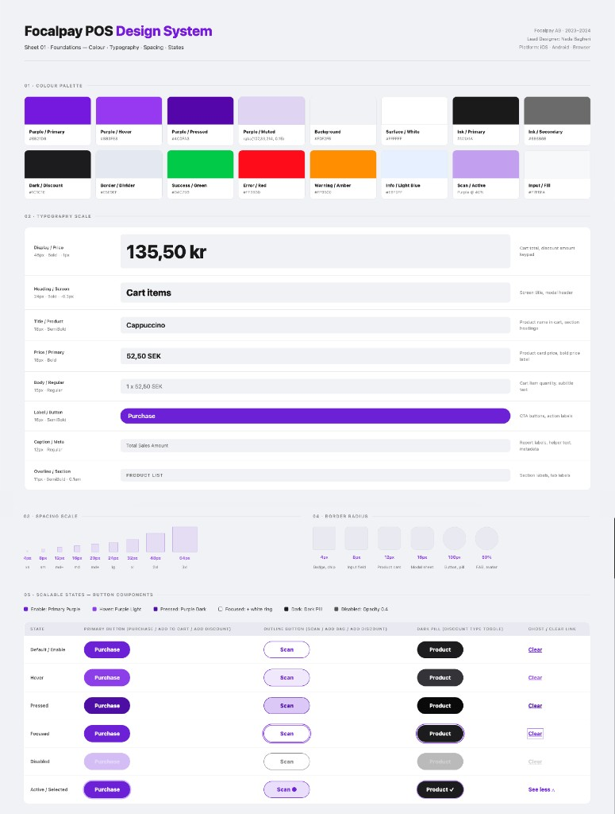
Brand palette, type scale, spacing, radii, and scalable button states
Instead of a fragmented multi-page system, I designed the application around a single scrollable home screen. The cart, product list, quick actions, and daily summary all live on one page — reducing taps and keeping cashiers in a continuous flow.
The persistent Purchase button and quick-action row (Scan · Add bag · Add discount) are always visible, no matter how many items are in the cart.
Design Solution I · One Scrollable Home — Everything in Reach
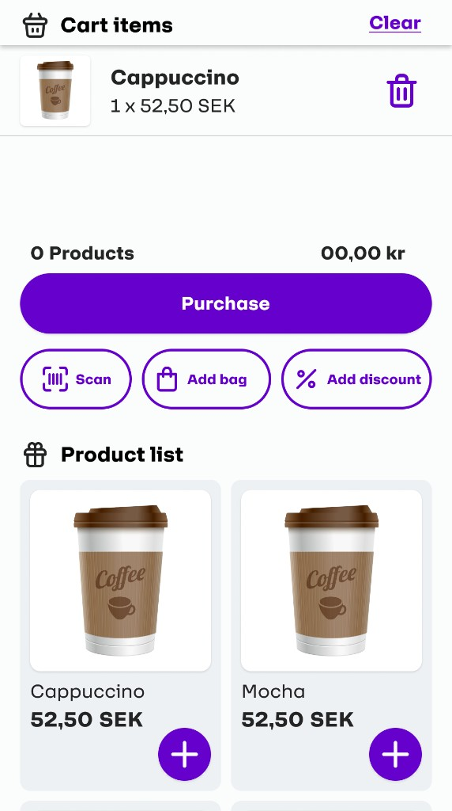
Empty cart — product grid visible below
Items in cart — Purchase CTA always visible
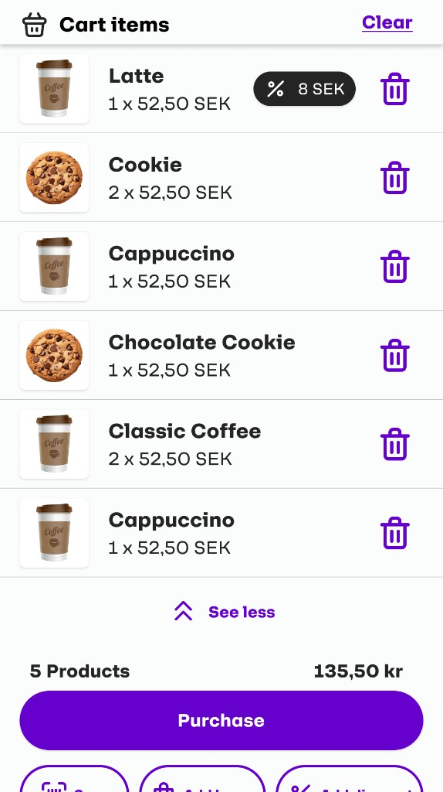
Expanded cart — all items visible
Design Solution II · Scan, Add, Manage — Without Leaving the App
Barcode scanning turns any smartphone camera into a product scanner. When a product is found, it's added to the cart instantly. When it's not found, the app prompts the cashier to add it on the spot — eliminating the need to go to a separate system.
The "Add New Product" flow is a key innovation of this project. It lets store staff create new products directly from the POS — with name, EAN, sales account, and an optional product image — all in two steps.
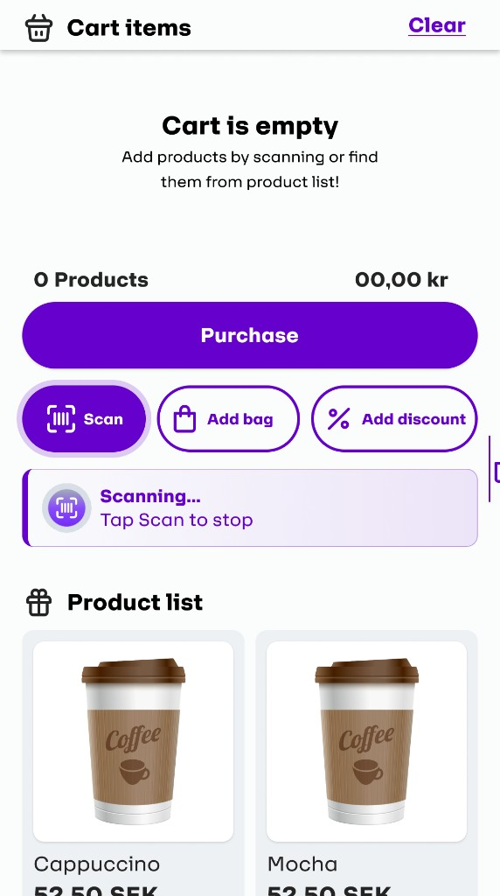
Scanning mode — camera active, product list visible
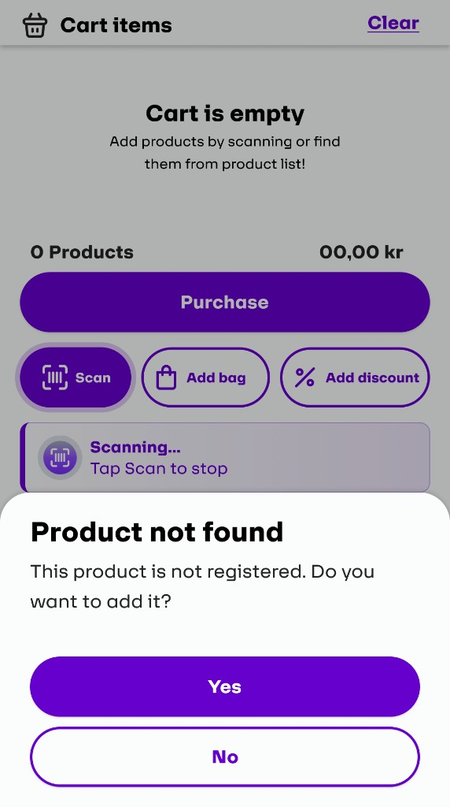
"Product not found" — prompt to add it instantly
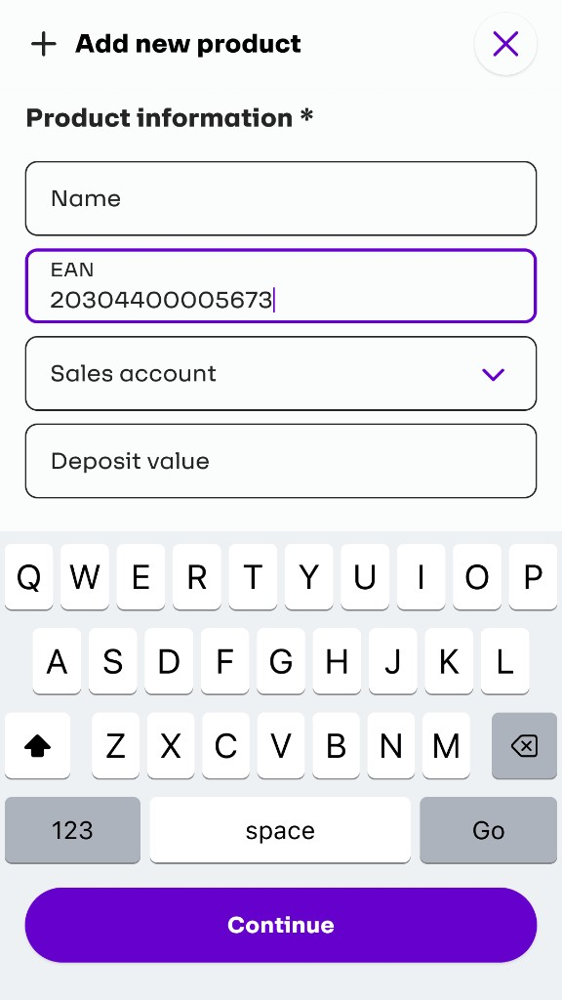
Add new product — Name, EAN, Sales account
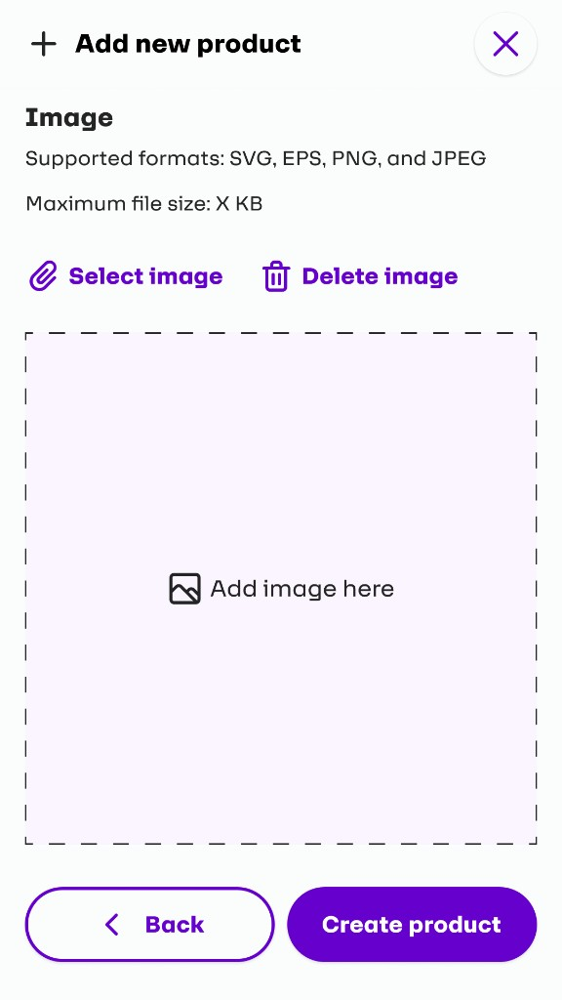
Step 2 — Upload product image
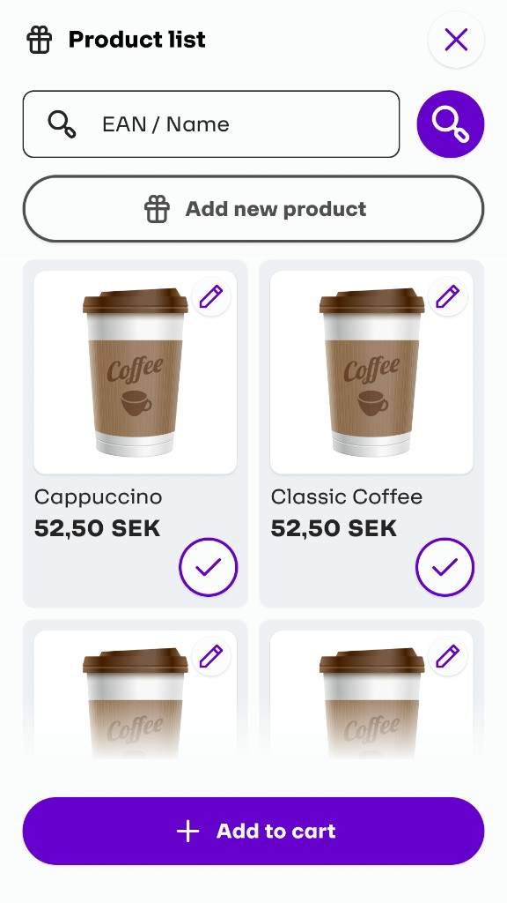
Product list — search by EAN or name
Design Solution III · Flexible Discounts — Per Product or Entire Cart
Discounts needed to work at two levels: applied to a single product (shown as a badge on that item) or to the entire receipt. Cashiers can choose between SEK amount or percentage, making the flow adaptable to any promotional scenario.
The discount screen uses a large-format numeric keypad — optimised for touchscreen use, even with gloves — with clearly segmented toggle buttons for type and scope.
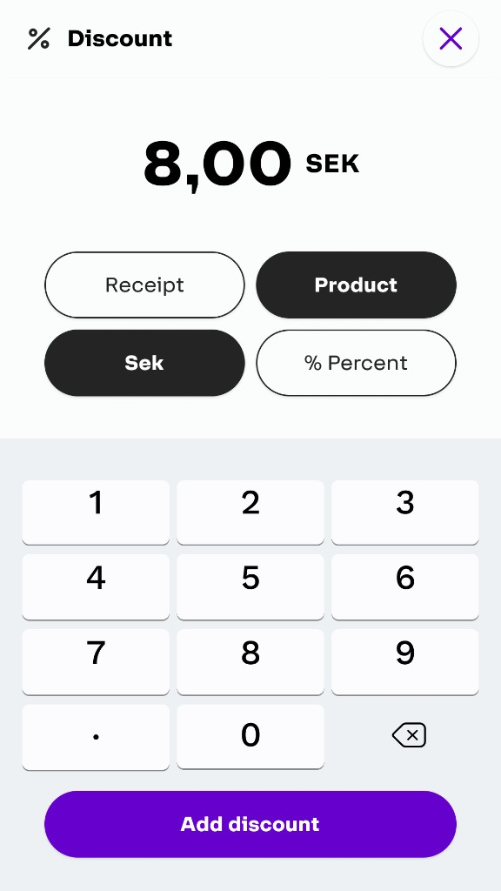
Discount input — SEK or %, receipt or product
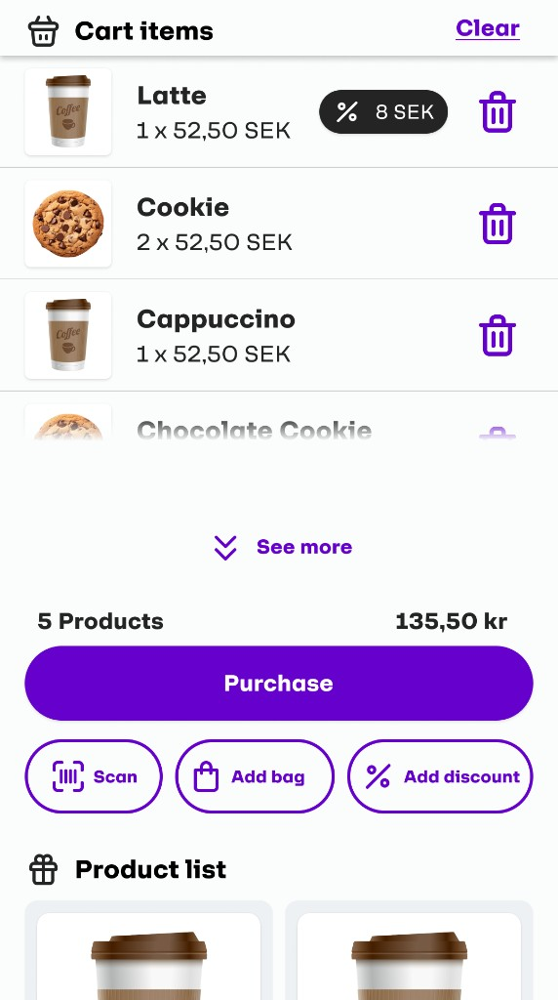
Discount applied — shown as banner in cart
Design Solution IV · Refunds — Refundable vs. Non-Refundable
The refund flow separates items into two clear tabs: Refundable and Non-refundable — helping cashiers quickly identify what can be returned. Items are selected with a single tap, the total updates in real time, and a "Do refund" button finalises the process.
Refundable items — tap + to select
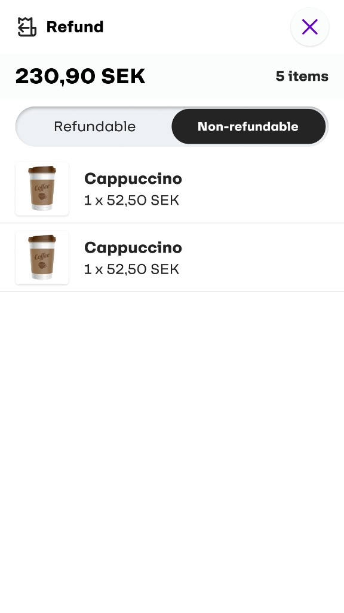
Non-refundable — clearly separated
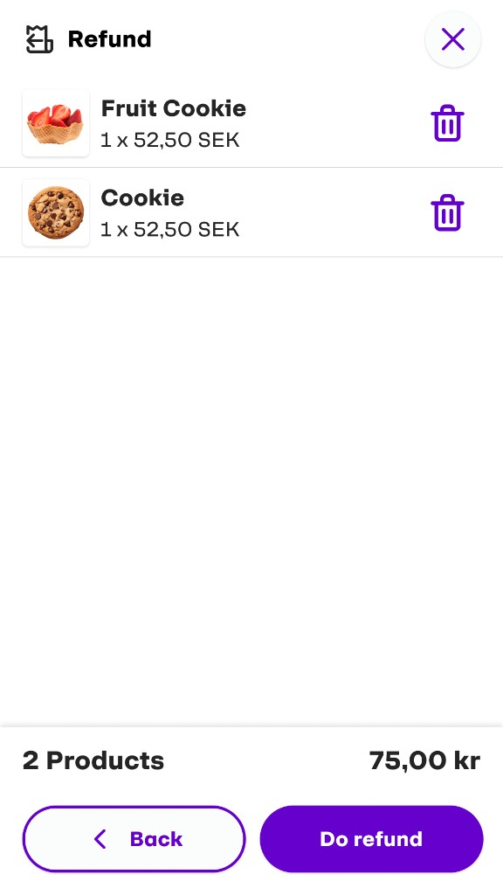
Selected items — total & "Do refund" CTA
Design Solution V · Transactions & Daily Reports — No Back-Office Needed
One of the biggest differentiators of this application is that reporting is built directly into the POS. Cashiers can view the day's transactions, fetch the daily report, review register vs. control check data, and submit — all without switching to a separate system.
The "Coming up" feature shows upcoming report deadlines, allowing store managers to submit empty reports for days with no transactions — preventing gaps in the reporting chain.
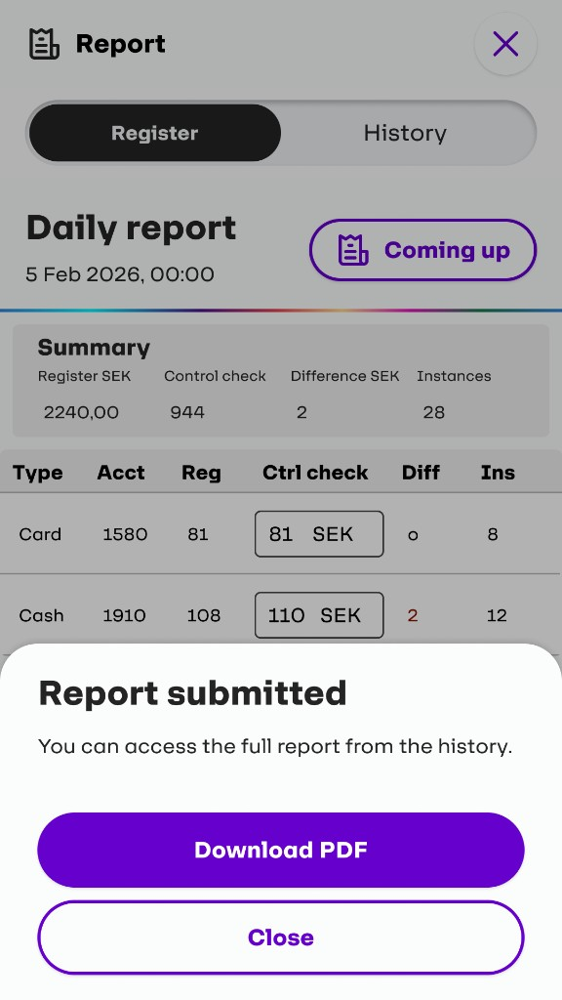
Transactions — filter by method or date
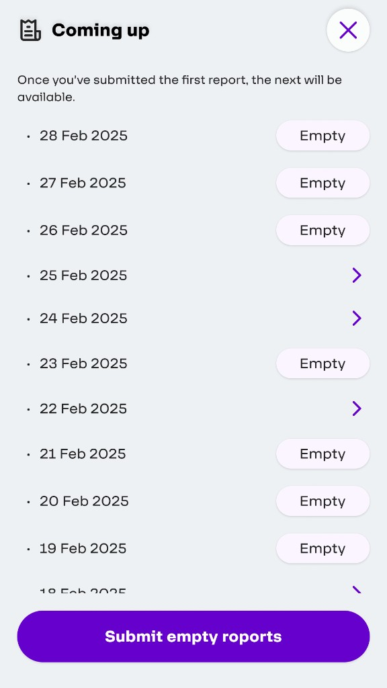
Daily report — register vs. control check
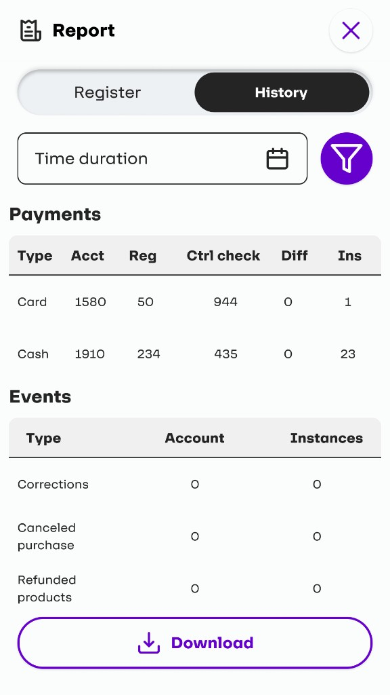
Fetch today's transactions before submitting
Results
Measurable Impact
Beyond lab-based usability sessions, the application was tested in a live store — the most demanding environment possible. This revealed issues that no prototype test could surface: how cashiers behave under time pressure, with real customers waiting.
Before Redesign
4+ taps
Average taps to complete a basic transaction. Multiple page navigations required.
✓ After Redesign
1–2 taps
Cart, product list, Purchase and quick actions all on one scrollable screen.
"The scroll feels natural. I don't have to think about where anything is."
— Cashier, In-Store Usability Test
60%
Fewer taps per transaction — from 4+ steps to 1–2
0
Extra systems needed — product management built into the POS
WCAG
AA compliant — accessible on all screen sizes and devices
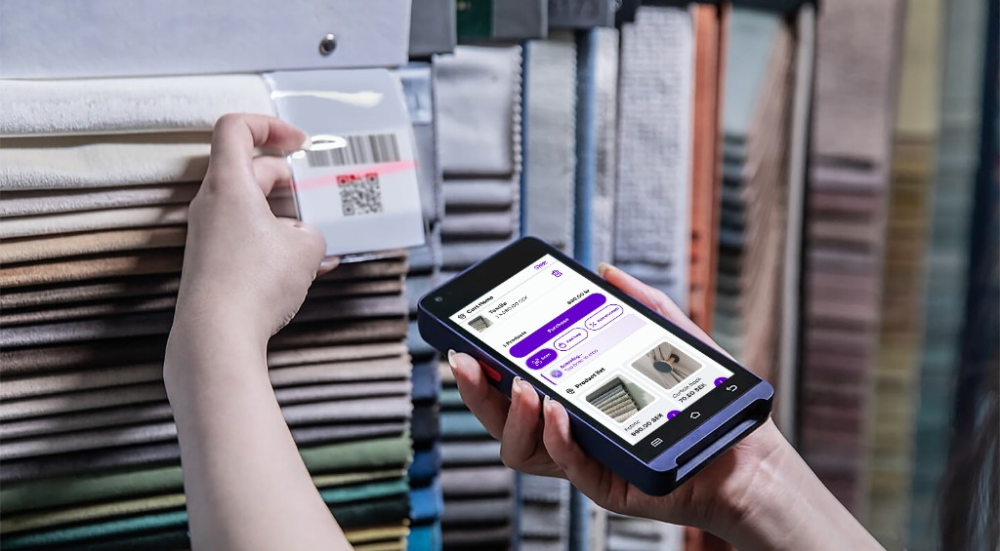
Live store validation — handheld POS in use during in-store usability testing
Reflection
What This Project Taught Me
01
Speed is a UX requirement, not a feature
In a cashier context, every extra second matters. Designing for speed means eliminating navigation, reducing cognitive load, and making the most frequent actions zero-effort.
02
Real-world testing is irreplaceable
Testing in a live store revealed behaviours that no usability lab could simulate. Cashiers under real pressure interact with interfaces very differently than they do in controlled sessions.
03
Reducing systems reduces errors
By integrating product management and reporting directly into the POS, we eliminated an entire category of user error — the mistakes that happen when people switch between disconnected tools.